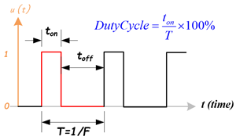
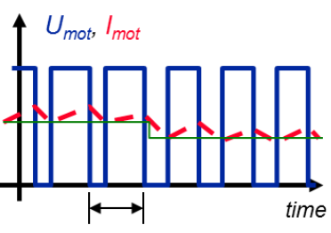
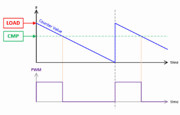

PWM — Pulse Width Modulation
1) Introduction
Pulse Width Modulation (PWM) is a digital technique for controlling the average power delivered to a load by rapidly switching between ON and OFF. Adjusting the duty cycle produces an effect analogous to varying the voltage.

Applications: LED brightness control, DC motors (H-bridge), RC servos, tone generation (buzzer), DAC conversion with an RC filter, etc.
2) Fundamental PWM concepts
Average and RMS values
A PWM signal of amplitude \( V_{high} \) and duty \( D \) has an average value of:
In resistive loads, the relevant parameter for power dissipation is the RMS value:
Power in a load \( R \) is computed as:
⚠️ Note: The formula \( V_{avg} = D \cdot V_{cc} \) holds when the low level = 0V and the high level = \( V_{cc} \).
Ripple
Ripple is the periodic variation around the average value caused by the real signal switching ON/OFF. With an RC filter, the output is not perfectly flat: it oscillates slightly with each PWM cycle.
- Less ripple ⇢ higher PWM frequency or filters with a time constant much larger than the switching period.
- More ripple ⇢ low frequency or a sensitive load.

Choosing the frequency
- LEDs: ≥ 1 kHz for the human eye, 10–20 kHz if cameras are involved, to avoid banding.
- DC motors: 15–25 kHz to get out of the human audible range.
- RC servos: 50 Hz with 1–2 ms pulses (a special protocol).
- PWM DAC: the higher \( f_{PWM} \) is relative to the filter, the lower the ripple.
3) Practical parameters
TOP and resolution
- TOP: maximum value the counter reaches before restarting.
- It defines the PWM's resolution:
Or more intuitively:
- Example: TOP=255 → 8 bits, TOP=1023 → 10 bits, TOP=4095 → 12 bits.
Duty vs Level relationship
The duty cycle results from comparing the counter with the CC (level) register:
Harmonics
A harmonic is a frequency component that appears in a periodic signal and whose frequency is an integer multiple of the fundamental. - Fundamental: f1 (e.g., 2 kHz). - Harmonics: 2f1 (4 kHz), 3f1 (6 kHz), etc.
Effects of harmonics: - Audible noise: if a harmonic falls within 20 Hz–20 kHz, it is heard as a hum. - Electromagnetic interference (EMI): high harmonics radiate from wires/traces. - Additional heating: excitation of transistors and coils at high frequencies. - Visual distortion: in LEDs/displays, harmonics can cause flicker or banding on cameras.
Edge alignment: - Edge-aligned: reinforces even harmonics → more EMI noise. - Center-aligned: cancels even harmonics → less audible/EMI noise.


4) PWM architecture in microcontrollers
flowchart TD
A[System clock] --> B[Clock divider]
B --> C[Counter 0..TOP]
C -->|Comparison| D[CC Register Duty A/B]
D --> E[Output switch]
E --> F[GPIO in PWM function]
C --> G[Wrap event TOP]
G --> H[Optional IRQ]- System clock (A): defines the PWM's time base.
- Clock divider (B): adjusts the useful frequency range.
- Counter 0..TOP (C): the heart of the PWM, defines the resolution.
- Comparison (C→D): if counter < CC ⇒ output HIGH; if ≥ CC ⇒ LOW.
- Output switch (E): may include normal/inverted polarity and an idle state (LOW, HIGH, Hi-Z).
- GPIO in PWM mode (F): the physical pin emits the PWM signal.
- Wrap event (C→G): useful for synchronizing processes.
- Optional IRQ (H): lets you run code on every PWM cycle.
5) PWM on the Raspberry Pi Pico 2
- Slices: 8 PWM blocks with 2 channels (A and B) ⇒ 16 outputs.
- Adjustable TOP: up to 16 bits.
- Clock divider: integer/fractional.
Frequency–divider–TOP relationship
where: - \( f_{clk} \) = system clock frequency (125 MHz on the Pico). - \( div \) = divider (1–255, fractional). - \( TOP \) = maximum count value.
Useful functions (SDK)
| API | What does it do? | Notes |
|---|---|---|
gpio_set_function(pin, GPIO_FUNC_PWM) |
Puts the pin in PWM mode. | GPIO_FUNC_PWM connects the pin to the internal PWM generator. |
pwm_gpio_to_slice_num(pin) |
Gets the associated slice. | Each slice drives 2 channels. |
pwm_gpio_to_channel(pin) |
Returns A or B. | Needed to set the duty. |
pwm_set_wrap(slice, top) |
Sets TOP. |
Determines the resolution. |
pwm_set_clkdiv(slice, div) |
Sets the divider. | Adjusts the frequency. |
pwm_set_chan_level(slice, chan, level) |
Sets the duty. | Duty relationship: \( \frac{level}{TOP+1} \). |
pwm_set_enabled(slice, bool) |
Enables/disables the slice. | Starts the PWM. |
Example in C (SDK)
// pwm_led.c — Dim an LED with PWM on GPIO 2
#include "pico/stdlib.h"
#include "hardware/pwm.h"
#include "hardware/clocks.h" // only if using
#define LED_PIN 2
#define F_PWM_HZ 2000 // 2 kHz: outside the visible range
#define TOP 1023 // 10 bits of resolution
int main() {
stdio_init_all();
gpio_set_function(LED_PIN, GPIO_FUNC_PWM);
uint slice = pwm_gpio_to_slice_num(LED_PIN);
uint chan = pwm_gpio_to_channel(LED_PIN);
// Compute the divider
float f_clk = 150000000.0f; // 150 MHz
// Or
// float f_clk = clock_get_hz(clk_sys);
float div = f_clk / (F_PWM_HZ * (TOP + 1));
pwm_set_clkdiv(slice, div);
pwm_set_wrap(slice, TOP);
pwm_set_chan_level(slice, chan, 0);
pwm_set_enabled(slice, true);
// Fade
int level = 0, step = 8, dir = +step;
while (true) {
pwm_set_chan_level(slice, chan, level);
sleep_ms(5);
level += dir;
if (level >= TOP || level <= 0) dir = -dir;
}
}